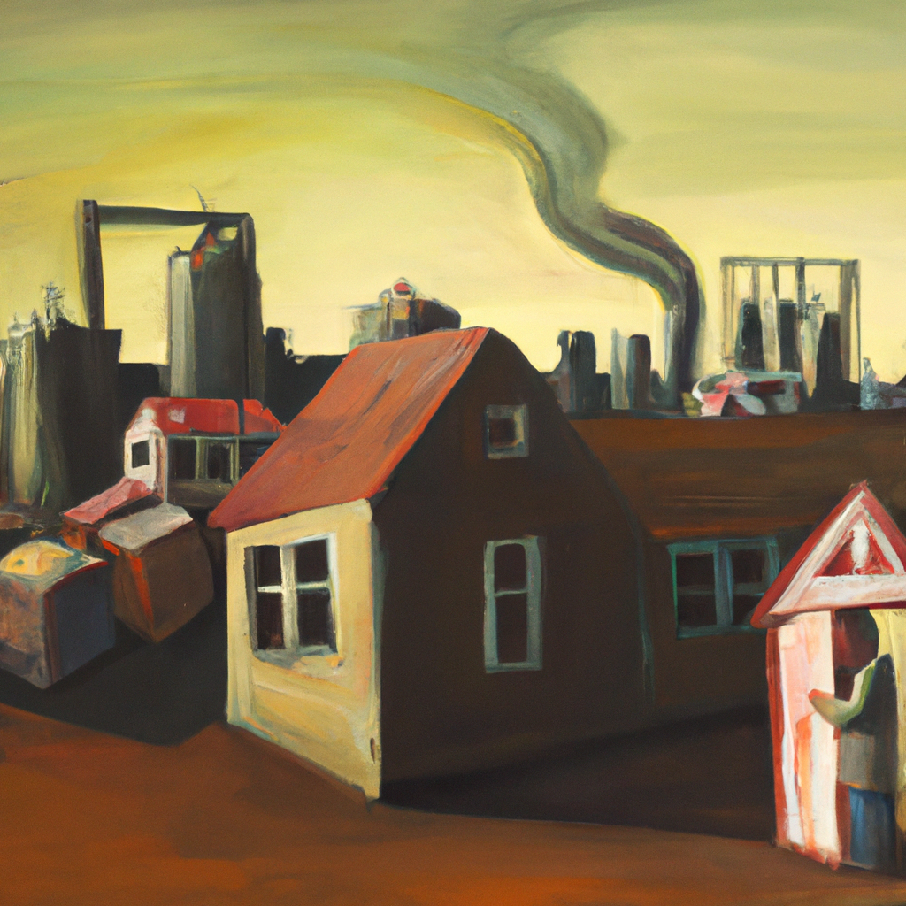

What will we do when all of the houses are gone
The rapid growth of technology and automation is making it increasingly difficult for people to afford their own homes. Real estate investors, often backed by large corporations, are snapping up homes as fast as they can, leading to a shortage of affordable housing and skyrocketing prices.
What happens when all of the houses are gone?
The population will continue to grow, but there may not be any privately owned homes in the next century. This means that the majority of people will be living in rental apartments, in government-subsidized housing, or in some form of communal living.
In order for people to have a place to live, the government will need to step in and provide affordable housing. This could come in the form of rent subsidies, public housing projects, or even the construction of entirely new cities.
At the same time, the rise of artificial intelligence (AI) and robotics will change the way we live. Automation will allow us to do more with fewer people, making it easier to create and maintain housing. We may even see the development of smart homes that are able to generate their own energy and clean and maintain themselves.
The future of housing is uncertain, but it is clear that the current system is unsustainable. We need to plan ahead and find a way to ensure that everyone has access to a place to live. This could mean finding new ways to manage real estate or creating entirely new housing solutions based on automation and AI. Either way, we need to act now so that everyone can have a place to call home in the future.